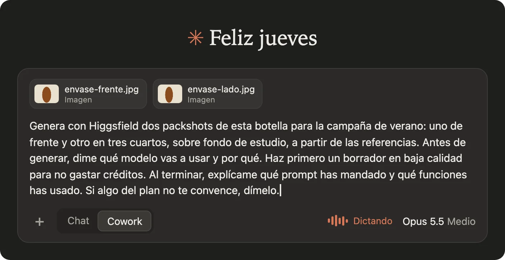
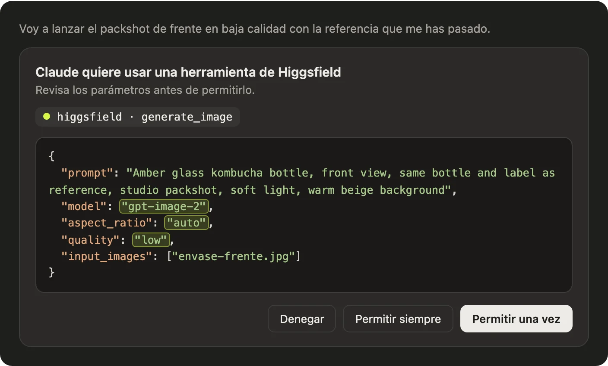
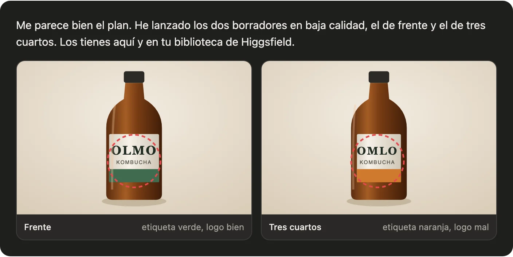
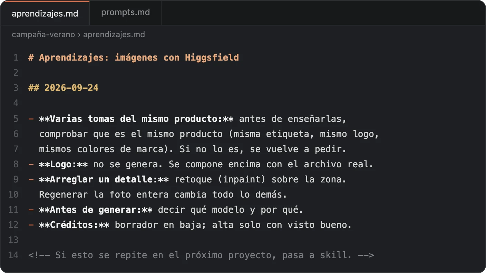

IA APLICADA · CASO PRÁCTICO
Dos packshots del mismo producto. Dos etiquetas distintas.
Cómo hacer que Claude revise su trabajo antes de enseñártelo, y cómo se convierte eso en una skill para tu equipo de marca.
Alejandro Campos Lamasdesliza →
01 / 07
El encargo, dictado y con condiciones
Dos packshots de la botella para la campaña, de frente y en tres cuartos. Antes de generar, qué modelo y por qué. Primero un borrador barato.

Recreación de la pantalla
02 / 07
Claude maneja Higgsfield por MCP
Higgsfield reúne modelos de imagen y vídeo de varios fabricantes. Con su MCP, Claude elige modelo y rellena los controles que tú tocarías a mano.

Recreación de la pantalla
03 / 07
Salen bonitos. Y con una etiqueta distinta en cada foto.

Recreación esquemática · marca inventada
04 / 07
Falta un control de calidad
Cada modelo del agregador falla a su manera, y el modelo lo elige Claude. Sin control, cada fallo lo descubres y lo corriges tú.
Como con un becario: si el proveedor le da una chapuza, quieres que la revise y la devuelva antes de traértela.
La regla cabe en una línea: si pides varias tomas del mismo producto, tiene que ser el mismo producto. Y el logo no se genera: se compone con el archivo real.
05 / 07
Antes de la skill, un fichero
Cada sesión deja reglas en aprendizajes.md. Las que aguantan varios encargos pasan a una skill, con la redacción exacta que funcionó.

Recreación de la pantalla
06 / 07
La skill: las reglas que sobrevivieron
---
name: packshots-de-marca
description: Packshots de producto con
Higgsfield, para campaña o web.
---
1. Di qué modelo vas a usar y por qué.
2. Borrador en baja. Alta con visto bueno.
3. El logo se compone con el archivo
real de /marca.
4. Antes de entregar: misma etiqueta,
mismo logo y mismos colores en todas
las tomas. Si falla, retoca la zona y
vuelve a comprobar.
5. Al cerrar, apunta lo aprendido.
07 / 07
Cuatro preguntas antes de pedirle nada a una herramienta conectada
- ¿Qué funciones tienes y cuáles te faltan?
- ¿Qué modelo vas a usar y por qué?
- ¿Qué vas a comprobar antes de enseñarme el resultado?
- ¿Qué hemos aprendido hoy?
Alejandro Campos Lamasdatos, marca e IA aplicada